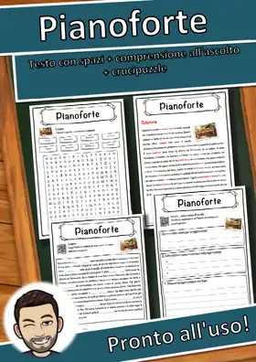
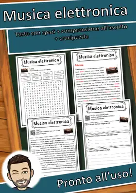
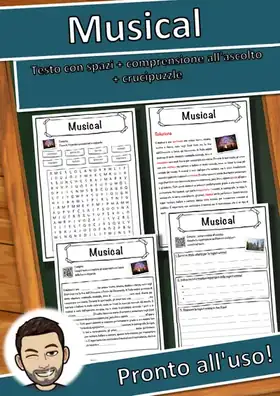
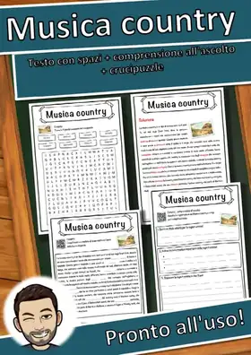
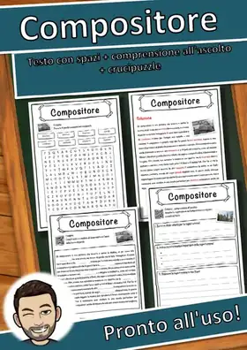

Charango Scheda di musica: testo con spazi vuoti, comprensione all'ascolto e crucipuzzle
1,49 €Vedi su eduki
Scheda di musica pronta all'uso su «Charango»: testo informativo con spazi vuoti e banca di parole, comprensione all'ascolto con audio reale (codice QR, nessuna preparazione tecnica), crucipuzzle con le parole chiave del tema e soluzione completa per l'autocorrezione. Materiale autonomo, ideale pe
TemaMusica
ClassiIV primaria, V primaria
Tipo di materialeScheda di lettura
FormatoPDF
SoluzioniIncluse
Materiali simili

Pianoforte – Scheda: testo con spazi vuoti, comprensione all'ascolto e crucipuzzle

Musica elettronica – Scheda: testo con spazi vuoti, comprensione all'ascolto e crucipuzzle

Musical – Scheda: testo con spazi vuoti, comprensione all'ascolto e crucipuzzle
Musica pop – Scheda: testo con spazi vuoti, comprensione all'ascolto e crucipuzzle

Musica country – Scheda: testo con spazi vuoti, comprensione all'ascolto e crucipuzzle
